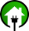

<!--
Copyright (C) 2016 OpenMotics BV

This program is free software: you can redistribute it and/or modify
it under the terms of the GNU Affero General Public License as
published by the Free Software Foundation, either version 3 of the
License, or (at your option) any later version.

This program is distributed in the hope that it will be useful,
but WITHOUT ANY WARRANTY; without even the implied warranty of
MERCHANTABILITY or FITNESS FOR A PARTICULAR PURPOSE.  See the
GNU Affero General Public License for more details.

You should have received a copy of the GNU Affero General Public License
along with this program.  If not, see <http://www.gnu.org/licenses/>.
-->
<template>
    <div id="device-xs" class="visible-xs"></div>
    <div id="device-sm" class="visible-sm"></div>
    <div id="device-md" class="visible-md"></div>
    <div id="device-lg" class="visible-lg"></div>
    <div class="wrapper">
        <header class="main-header">
            <a href.bind="logoRoute" class="logo">
            <span class="logo-mini">
                
            </span>
                <span class="logo-lg">
                    
                </span>
            </a>
            <nav class="navbar navbar-static-top" role="navigation">
                <a href="#" class="sidebar-toggle" data-toggle="push-menu" role="button">
                    <span class="sr-only">Toggle navigation</span>
                    <span class="icon-bar"></span>
                    <span class="icon-bar"></span>
                    <span class="icon-bar"></span>
                </a>
                <ul class="nav navbar-nav">
                    <li if.bind="shared.target === 'cloud'" class="dropdown tasks-menu ${openInstallation ? 'open' : ''}">
                        <a class="expander hand">
                            <i class="fa" translate.bind="'icons.installation' & t"></i>
                            <span class="visible-lg-inline" if.bind="shared.installation !== undefined">${shared.installation.name}</span>
                            <span class="visible-lg-inline" if.bind="shared.installation === undefined">${'generic.notconnected' & t}</span>
                            <i class="fa" translate.bind="'icons.dropdown' & t"></i>
                        </a>
                        <ul class="dropdown-menu">
                            <li class="header">${'pages.navigation.myinstallations' & t}</li>
                            <li style="max-height:30vh; overflow:auto;">
                                <ul repeat.for="installation of mainInstallations" class="menu">
                                    <li css.bind="{'background-color': shared.installation === installation ? 'rgba(0, 166, 90, 0.28)' : ''}">
                                        <a data-toggle="dropdown" href="#" click.delegate="connectToInstallation(installation)">
                                                    <span>
                                                        <i if.bind="!installation.aliveLoading && installation !== shared.installation && installation.alive === true" class="fa outline-alive" translate.bind="'icons.connection' & t"></i>
                                                        <i if.bind="!installation.aliveLoading && installation !== shared.installation && installation.alive === false" class="fa outline-dead" translate.bind="'icons.connection' & t"></i>
                                                        <i if.bind="!installation.aliveLoading && installation !== shared.installation && installation.alive === undefined" class="fa outline-undefined" translate.bind="'icons.connection' & t"></i>
                                                        <i class="fa fa-spinner fa-spin" if.bind="installation.aliveLoading"></i>

                                                        <i class="fa" translate.bind="'icons.connection' & t"
                                                           css.bind="{ 'color': installation.alive ? '#00a65a' : 'red' }"
                                                           if.bind="!installation.aliveLoading && installation === shared.installation"></i>
                                                        <span style="margin-left: 10px;">${installation.name}</span>
                                                    </span>
                                        </a>
                                    </li>
                                </ul>
                            </li>
                            <li class="dropdown-footer">
                                <a href="${router.generate('cloud.installations')}">${'generic.installationmanagermsg' & t}</a>
                            </li>
                        </ul>
                    </li>
                    <li if.bind="shared.target === 'cloud' && openMoticGateways.length > 1" class="dropdown tasks-menu ${openGateways ? 'open' : ''}">
                        <a class="expander hand gateways">
                            <span class="visible-lg-inline">${'generic.gateway' & t} ${shared.openMoticGateway.name}</span>
                            <i class="fa" translate.bind="'icons.dropdown' & t"></i>
                        </a>
                        <ul class="dropdown-menu">
                            <li class="header">${'pages.navigation.mygateways' & t}</li>
                            <li style="max-height:30vh; overflow:auto;">
                                <ul repeat.for="gateway of openMoticGateways" class="menu">
                                    <li css.bind="{'background-color': shared.openMoticGateway === gateway ? 'rgba(0, 166, 90, 0.28)' : ''}">
                                        <a data-toggle="dropdown" href="#" click.delegate="connectToGateway(gateway)">
                                                    <span>
                                                        <i if.bind="gateway !== shared.openMoticGateway && gateway.online === true" class="fa outline-alive" translate.bind="'icons.connection' & t"></i>
                                                        <i if.bind="gateway !== shared.openMoticGateway && gateway.online === false" class="fa outline-dead" translate.bind="'icons.connection' & t"></i>
                                                        <i if.bind="gateway !== shared.openMoticGateway && gateway.online === undefined" class="fa outline-undefined" translate.bind="'icons.connection' & t"></i>

                                                        <i class="fa" translate.bind="'icons.connection' & t"
                                                           css.bind="{ 'color': gateway.online ? '#00a65a' : 'red' }"
                                                           if.bind="gateway === shared.openMoticGateway"></i>
                                                        <span style="margin-left: 10px;">${'generic.gateway' & t} ${gateway.name}</span>
                                                    </span>
                                        </a>
                                    </li>
                                </ul>
                            </li>
                        </ul>
                    </li>
                </ul>
                <div class="navbar-custom-menu" style="margin-left: auto;">
                    <ul class="nav navbar-nav">
                        <li class="dropdown tasks-menu">
                            <a href="#" class="dropdown-toggle" data-toggle="dropdown">
                                <i class="fa fa-flag-o"></i>
                            </a>
                            <ul class="dropdown-menu">
                                <li class="header">${'pages.navigation.languages' & t}</li>
                                <li>
                                    <ul class="menu">
                                        <li>
                                            <a href="#" click.delegate="setLocale('nl')">
                                                <i class="fa" translate.bind="locale === 'nl' ? 'icons.cradio' : 'icons.radio' & t"></i> &nbsp;
                                                Nederlands
                                            </a>
                                        </li>
                                        <li>
                                            <a href="#" click.delegate="setLocale('en')">
                                                <i class="fa" translate.bind="locale === 'en' ? 'icons.cradio' : 'icons.radio' & t"></i> &nbsp;
                                                English
                                            </a>
                                        </li>
                                    </ul>
                                </li>
                                <li class="dropdown-footer">
                                    <a>${'pages.navigation.selectyourlanguage' & t}</a>
                                </li>
                            </ul>
                        </li>
                        <li show.bind="shared.target === 'cloud'">
                            <a href="#" click.delegate="setNavigationGroup('profile')">
                                <i class="fa" translate.bind="'icons.user' & t"></i>
                            </a>
                        </li>
                        <li show.bind="shared.target !== 'cloud'">
                            <a href="${router.generate('logout')}"><i class="fa fa-sign-out"></i></a>
                        </li>
                    </ul>
                </div>
            </nav>
        </header>
        <aside class="main-sidebar">
            <section class="sidebar">
                <ul class="sidebar-menu" data-widget="tree">
                    <li if.bind="showPreviousIcon">
                        <a href="#" click.delegate="setNavigationGroup('installation')">
                            <i class="fa" translate.bind="'icons.previous' & t"></i>
                            <span>${shared.installation.name}</span>
                        </a>
                    </li>
                    <li repeat.for="row of router.navigation | subMenu:shared.navigationGroup & signal: 'navigate'"
                        class="${row.children.length > 0 ? 'treeview' : ''} ${row.isActive ? 'active' : ''}" show.bind="row.config.show">
                        <a if.bind="row.children.length === 0"
                           href.bind="row.href" onclick="document.body.className = document.body.className.replace('sidebar-open', '');">
                            <i class="fa" translate.bind="'pages.' + row.settings.key + '.icon' & t"></i>
                            <span>${'pages.' + row.settings.key + '.title' & t}</span> <!-- mandatory span -->
                        </a>
                        <a if.bind="row.children.length > 0" href.bind="row.href">
                            <i class="fa" translate.bind="'pages.' + row.settings.key + '.icon' & t"></i>
                            <span>${'pages.' + row.settings.key + '.title' & t}</span> <!-- mandatory span -->
                            <span if.bind="shared.updateAvailable && !row.isActive && row.settings.key === 'settings'" class="pull-right-container">
                                <i style="margin-right: 30px;" class="bell fa fa-bell pull-right"></i>
                            </span>
                            <i class="fa ${row.isActive ? 'fa-angle-down' : 'fa-angle-left'} pull-right" ></i>
                        </a>
                        <ul if.bind="row.isActive && row.children.length > 0" class="treeview-menu">
                            <li repeat.for="sub of row.children" class="${sub.isActive ? 'active' : ''}" show.bind="sub.config.show">
                                <a if.bind="sub.children.length === 0"
                                    href.bind="sub.href" onclick="document.body.className = document.body.className.replace('sidebar-open', '');">
                                    <i class="fa" translate.bind="'pages.' + sub.settings.key + '.icon' & t"></i>
                                    <span>${'pages.' + sub.settings.key + '.title' & t}</span>
                                </a>
                                <a if.bind="sub.children && sub.children.length > 0 && row.isActive"
                                    href.bind="sub.href">
                                    <i class="fa" translate.bind="'pages.' + sub.settings.key + '.icon' & t"></i>
                                    <span>${'pages.' + sub.settings.key + '.title' & t}</span>
                                    <span if.bind="shared.updateAvailable && !sub.isActive && sub.settings.key === 'settings'" class="pull-right-container">
                                        <i style="margin-right: 30px;" class="bell fa fa-bell pull-right"></i>
                                    </span>
                                    <i class="fa ${sub.isActive ? 'fa-angle-down nested-option-icon-arrow-fix' : 'fa-angle-left'} pull-right" ></i>
                                </a>
                                <ul if.bind="sub.isActive && sub.children.length > 0" class="treeview-menu">
                                    <li repeat.for="ssub of sub.children" class="${ssub.isActive ? 'active' : ''}" show.bind="ssub.config.show">
                                        <a href.bind="ssub.href" onclick="document.body.className = document.body.className.replace('sidebar-open', '');">
                                            <i class="fa" translate.bind="'pages.' + ssub.settings.key + '.icon' & t"></i>
                                            <span>${'pages.' + ssub.settings.key + '.title' & t}</span>
                                            <span if.bind="shared.updateAvailable && ssub.href === '#/settings/updates'" class="pull-right-container">
                                                <i class="bell fa fa-bell pull-right"></i>
                                            </span>
                                        </a>
                                    </li>
                                </ul>
                            </li>
                        </ul>
                    </li>
                    <li if.bind="shared.navigationGroup === 'installation'" repeat.for="app of apps"
                        class="${app.reference === shared.appIndex ? 'active' : ''}">
                        <a route-href="route: apps.index; params.bind: {reference: app.reference}"
                           onclick="document.body.className = document.body.className.replace('sidebar-open', '');">
                            <i class="fa" translate.bind="'pages.settings.apps.icon' & t"></i>
                            <span>${app.name}</span> <!-- mandatory span -->
                        </a>
                    </li>
                </ul>
            </section>
        </aside>
        <div class="content-wrapper">
            <auratoast></auratoast>
            <router-view></router-view>
        </div>
        <footer class="main-footer">
            <div class="pull-right hidden-xs">
                v${shared.version}
            </div>
            <strong>Copyright &copy; ${copyrightYear} <a href="http://openmotics.com" target="_blank">OpenMotics BV</a></strong> -
            All rights reserved - <span class="hidden-xs">License: </span>AGPL v3
        </footer>
    </div>
</template>
